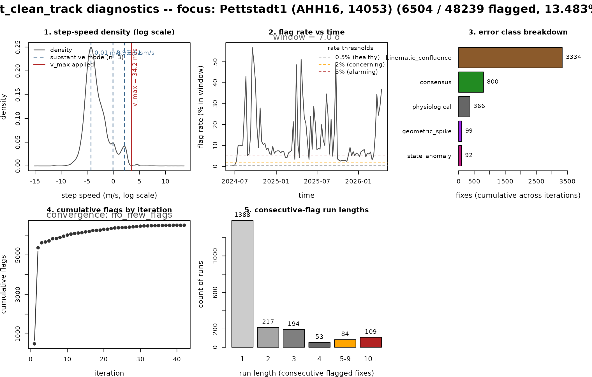
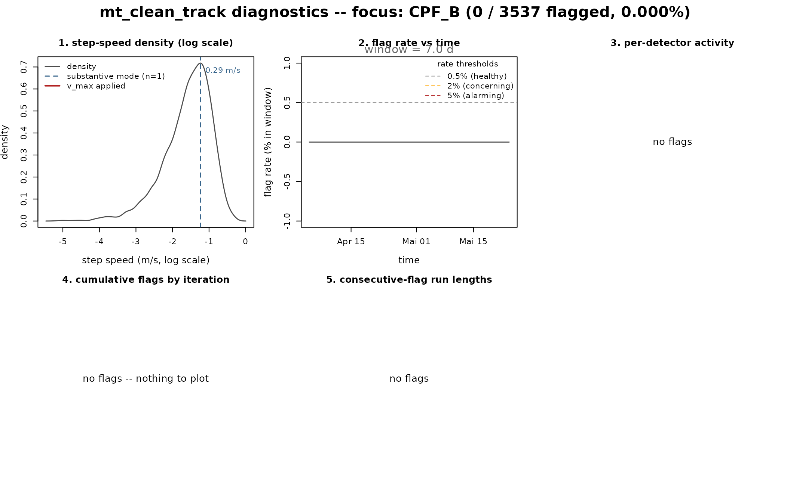

Diagnosing an mt_clean_track run
Source:vignettes/OUTLIER_2_diagnose_clean_track.Rmd
OUTLIER_2_diagnose_clean_track.Rmdmt_clean_track() gives you a result, but did it actually
work? A high flag rate can mean the track was dirty — or it can mean the
cleaner was fooled by normal behaviour.
mt_diagnose_clean_track() is the post-run health check that
tells the two apart. It draws six panels, much like the diagnostic plots
of a fitted model, and each panel targets one way a run can go wrong and
points to a specific remedy. It does not re-run the checks; it reads the
flag columns and the step speeds and renders one figure you can
eyeball.
A run that needs attention — Pettstadt1, a juvenile white stork
Pettstadt1 is a juvenile white stork (~3 kg) with 48k GPS fixes spanning two summers and one autumn migration. We clean it, then run the diagnostic on the result.
pet <- mt_read(system.file("extdata/Pettstadt1-14053.csv.gz",
package = "move2utils"))
pet <- pet[!st_is_empty(pet), ]
pet <- mt_filter_unique(pet, criterion = "first")
pet <- dplyr::arrange(pet, mt_track_id(pet), mt_time(pet))
res_pet <- mt_clean_track(pet, mass = 3, mode = "flying",
plot = FALSE, remove = FALSE,
silent = TRUE,
max_flag_fraction = 0.5)
cat(sprintf("Pettstadt1: %d / %d flagged (%.2f%%)\n",
sum(res_pet$is_outlier), nrow(res_pet),
100 * mean(res_pet$is_outlier)))
#> Pettstadt1: 6504 / 48239 flagged (13.48%)The flag fraction is high — more than genuine GPS errors would produce on a stork. Time to ask the diagnostic what happened.
diag <- mt_diagnose_clean_track(res_pet)
#> === mt_diagnose_clean_track: concerns flagged ===
#> Panel 1: 3 substantive modes detected at 0.01, 0.95, 8.51 m/s -- bimodal behaviour. The per-fix detectors threshold against a single distribution; consider state-conditional analysis or filtering to one mode before cleaning.
#> Panel 2: sustained band of elevated flag rate detected -- this is the migration-over-flagging signature. Consider filtering that window or running it through state-conditional analysis.
The function prints the concerns it found and renders six panels.
Reading the panels
Panel 1 — log-speed density with detected modes. The
grey curve is the distribution of step speeds on a log scale. The blue
dashed lines mark the substantive modes the package found (a mode counts
when its basin holds at least 2 % of fixes and its peak density
is at least 5 % of the tallest peak). The red line is the
v_max that was used. A healthy track shows a single
dominant mode with a thin upper tail. On Pettstadt1 you instead see two
or three modes — sleeping or perched at the low end, flight further
right. Several substantive modes is the bimodal-behaviour
signature: each per-location check measures a fix against one
overall distribution, so fixes from one mode can fall in the tail of the
other and look like outliers.
Panel 2 — flag rate vs time. Rolling 7-day flag rate along the timeline. Healthy tracks read flat, near 0 %, with isolated narrow spikes only where the bird had a real GPS noise event. On Pettstadt1 you see a sustained band of elevated flag rate through the autumn migration months. Sustained is not what errors look like — sustained means the bird was doing something the checks were not calibrated for.
Panel 3 — per-detector activity. Counts of fixes
flagged by each combination of checks, summed across all iterations. The
headline categories come from the error_class column, which
mt_clean_track() fills the same way no matter which
consensus rule you run, so this panel reads the same under the default
evidence_corroborated rule as under any other. The
categories are consensus (≥3 of the 4 checks agree),
geometric_spike (path-position and
there-and-back), state_anomaly ((path-position or
there-and-back) and speed), and
kinematic_confluence ((path-position or there-and-back)
and unusual-movement). The single-check bars —
path-position-only, there-and-back-only, unusual-movement-only,
speed-only — are fixes one check flagged that the combined decision did
not promote to an outlier. That is useful: a tall single-check bar tells
you which check is firing noisily on this track. On Pettstadt1 expect
the path-position and unusual-movement checks to dominate
(kinematic_confluence): path-position says “this fix sits
far from a straight line between its neighbours” and unusual-movement
says “this fix’s joint speed-and-turn signature lies in the tail of the
distribution”. Both are correct relative to the resting
baseline, and both are wrong as errors during migration.
Panel 4 — cumulative flagging by iteration. A rapid
plateau in 2–4 iterations is healthy — the iteration loop has settled on
a stable set of flags. Linear growth that never plateaus, especially if
the run hits the flag_fraction_exceeded abort, is the
non-converging signature: each pass peels off another batch as
the working set keeps shifting. There is no fixed point because the root
mismatch — a bimodal distribution against single-distribution thresholds
— cannot be resolved by iterating.
Panel 5 — consecutive-flag run lengths. Healthy: a tall length-1 bar and a short tail. The orange and red bins (“5–9”, “10+”) count runs of consecutively flagged fixes. Long runs are not what discrete GPS errors look like; they are what happens when the bird flies through a region the checks treat as anomalous for hours at a time.
The notes that mt_diagnose_clean_track() prints
summarise these patterns in plain language and point to the remedy.
A clean run for contrast — CPF_B (synthetic, no truth outliers)
The bundled CPF_B track is documented as clean (no injected outliers), so a healthy run and its diagnostic should look very different from Pettstadt1.
syn <- mt_read(system.file("extdata/synthetic_tracks.csv.gz",
package = "move2utils"))
syn <- syn[!st_is_empty(syn), ]
m_B <- syn[mt_track_id(syn) == "CPF_B", ]
res_B <- mt_clean_track(m_B, plot = FALSE, remove = FALSE, silent = TRUE)
cat(sprintf("CPF_B: %d / %d flagged (%.4f%%)\n",
sum(res_B$is_outlier), nrow(res_B),
100 * mean(res_B$is_outlier)))
#> CPF_B: 0 / 3537 flagged (0.0000%)
mt_diagnose_clean_track(res_B)
#> === mt_diagnose_clean_track: no concerns flagged. ===
Here Panel 1 has a single dominant mode, Panel 2 is flat, Panel 3 has zero or near-zero bars, Panel 4 plateaus at iteration 1, and Panel 5 shows mostly run length 1 (or no flags at all). The diagnostic prints “no concerns flagged” — the run was healthy.
A multi-individual study
When you pass a multi-track result, panels 1–5 focus on the
individual with the highest flag rate by default, and panel 6 adds a
per-individual dotplot so you can see at a glance which animals to
inspect next. Pass individual = "..." to focus a specific
track.
res_multi <- mt_clean_track(study, mass = my_mass_named, mode = "flying",
compact = TRUE, plot = FALSE, remove = FALSE)
## Default focus = highest-flag-rate individual
mt_diagnose_clean_track(res_multi)
## Or focus on a specific bird
mt_diagnose_clean_track(res_multi, individual = "Benjamin 7206 E0706")A decision tree for what to do next
| Diagnostic signature | Likely cause | Remedy |
|---|---|---|
| Multiple substantive modes (Panel 1) | Bimodal behaviour (rest + flight) | State-conditional analysis (see
vignette("OUTLIER_3_state_conditional", package = "move2utils"));
or filter to one state |
| Sustained band of elevated flag rate (Panel 2) | Migration period being mistaken | Filter the migration window or run it through state-conditional analysis |
| Single-check bars dominate (Panel 3) | One check noisy on this track; the combined decision did not promote it | Inspect those flags manually; consider raising that check’s threshold |
| Iteration not plateauing (Panel 4) | Self-reinforcing flagging | Check Panel 1; supply a hard v_max; or use
state-conditional analysis |
Long-run tail without error_class = "block" (Panel
5) |
Sustained behavioural state | Same as Panel 2 / 4 |
| Several individuals at >2 % (Panel 6, multi) | Cohort heterogeneity | Triage list; run state-conditional or hard-cap path on the >5 % individuals |
When several panels light up together with the same root cause — bimodal distribution, a sustained migration band, non-converging iteration, a heavy run-length tail — the answer is almost always state-conditional analysis.
The error_class taxonomy
Whichever consensus rule decides the flags,
mt_clean_track() labels each flagged fix with one
error_class, so the diagnostic (and your own inspection)
reads the same vocabulary every time. The categories are:
-
consensus— at least three of the four checks agreed. -
geometric_spike— the path-position and there-and-back checks agreed (the classic out-and-back spike). -
state_anomaly— a geometric check plus the speed cap. -
kinematic_confluence— a geometric check plus the unusual-movement check. -
block— part of a connected group of fixes cut off from the real trajectory and removed as a unit (the spoof / multi-hour-jump case). -
physiological— removed by a hard physiological speed cap (thev_max/mass+modepath). -
state_transition_buffered— a flag near a behavioural-state boundary that the buffer downgraded, so you can tell genuine errors from edge-of-state artefacts.
These labels are computed independently of the consensus rule, so
switching from the default evidence_corroborated to
class_aware, strict, majority, or
any other rule changes which fixes are flagged, never
how a flagged fix is named.
What the diagnostic does not do
It does not re-run the per-location checks. The path-position
(bridge-η) and joint-probability distributions — which would let you see
whether a score threshold landed in a real density valley or cut through
a continuum — are not part of the suite yet; a
recompute = TRUE panel for those is a planned
extension.
It also assumes a single behavioural-state threshold was applied. Tracks that you have already segmented by state and cleaned per segment will read “healthy” on every panel, because each segment is unimodal.
It does not produce the combined_evidence column. That
column is returned only by the standalone
mt_flag_consensus() (in its
evidence_corroborated or weighted_evidence
mode); mt_clean_track() returns the flag columns the
diagnostic reads, not the evidence score.
Further reading
-
vignette("OUTLIER_1_getting_started", package = "move2utils")— the unifiedmt_clean_track()workflow and a brief tour of all four checks. -
vignette("OUTLIER_3_state_conditional", package = "move2utils")— when the diagnostic flags bimodal behaviour, the recipe for cleaning each behavioural state separately. -
vignette("OUTLIER_4_outlier_bridge", package = "move2utils")— the path-position check and the directional error-morphology classifier; for users who want fine-grained control over just one check. -
vignette("OUTLIER_5_persistence_score", package = "move2utils")— multi-scale annotation that scores how confidently each flag is an outlier; useful as a post-cleaning confidence filter. -
vignette("OUTLIER_heterogeneous_error_regimes", package = "move2utils")— outlier detection with heterogeneous error regimes: one sensor at a time. -
vignette("OUTLIER_example_outlier_whitestork", package = "move2utils")— a full narrated cleaning pipeline on a real high-frequency stork track. -
vignette("OUTLIER_example_leo_migration", package = "move2utils")— outlier detection on irregular, large-scale satellite data.